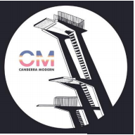

About Canberra Modern
Canberra Modern (CM) showcases Canberra’s unique mid – late twentieth century places and spaces. Our motto is 'Conservation Through Participation' and our innovative events aim to increase awareness of Canberra’s modernist character, heritage, and uniqueness of international importance, because it is a designed national capital with significant landscape features from historic trees lining planned main roads and suburban streets, and a setting of natural hills, bushland and open space.
Through event-based advocacy and engagement with the community, Canberra Modern promotes the protection and appreciation of the places which make an irreplaceable contribution to Canberra’s historic urban and designed cultural landscape.
Read more